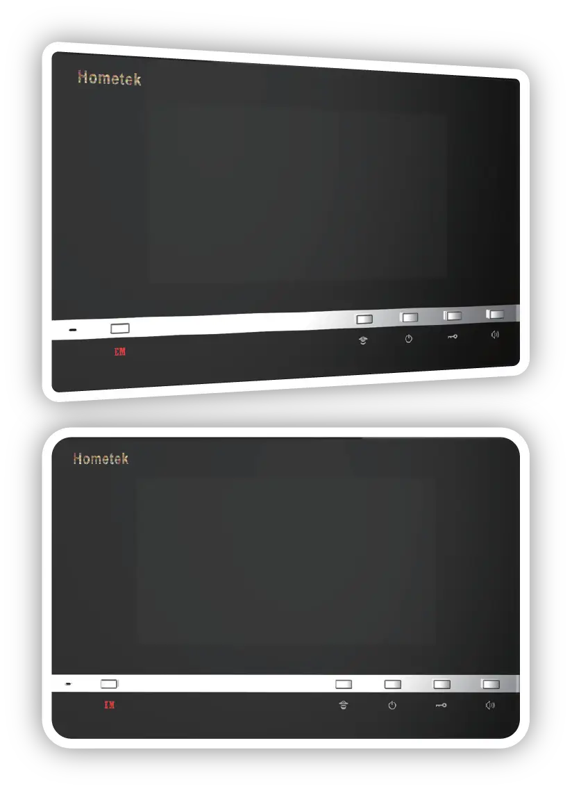

Residential
Intercom
彩色影像室內對講機
- 免持聽筒式雙向通話
- 電源電壓DC 12V

- 複頻和弦鈴聲，音色優美。
- 7”TFT LCD彩色顯示螢幕。
- 智慧鈴聲，可以不同音樂鈴聲分辨不同來源之呼叫訊號。
- 雙向對講功能，可分別與管理員及公共大門之訪客對講。
- 影像切換功能，可手動或自動切換。
- 可開啟住戶玄關及公共大門之電子鎖，並具1個門位顯示功能。
- 背光式緊急求救按鈕，黑暗中亦清晰可見。
